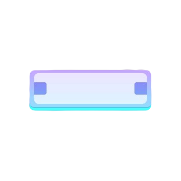
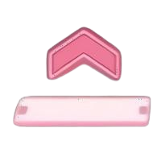

Project Sekai é um jogo de ritmo com estilo arcade para celular com um modo de jogo relativamente fácil, onde tudo que o jogador precisa fazer é clicar nas notas que caem da pista vertical de acordo com o ritmo da música. Há diferentes tipos de notas: toque simples, notas longas (holds), notas de deslizar (flicks), e combinações dessas notas juntas ao mesmo tempo.

Esta é uma nota normal, onde você deve apenas clicar sobre.

Esta é uma nota onde você deve arrastar para cima para acertá-la.